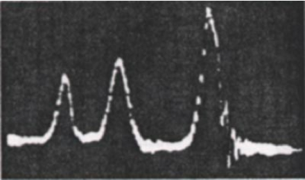
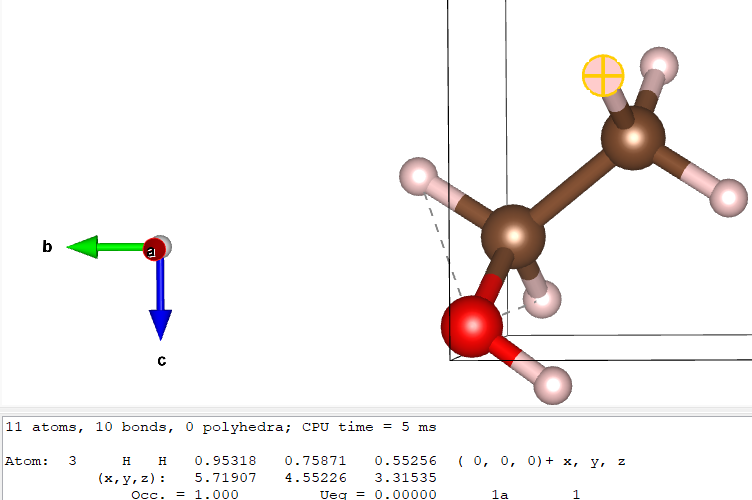
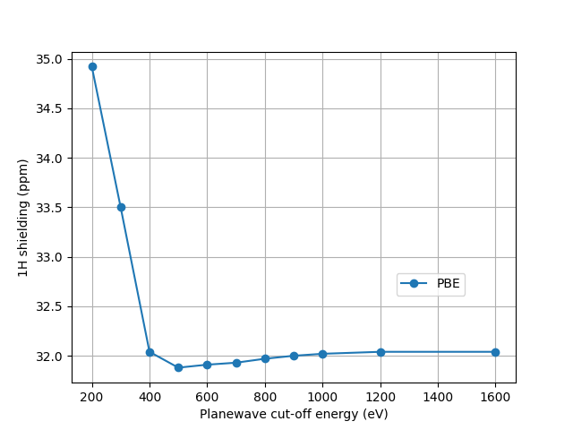
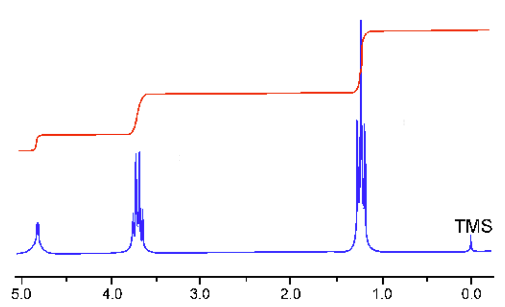

Example 1 - Ethanol

The discovery that one could actually see chemical shifts in hydrogen spectra was made in 1951 at Stanford University by Packard, Arnold, Dharmatti (shown in Fig1.). In this tutorial, we will try to reproduce this result.
Getting outputs
This tutorial will go through the calculations for ethanol, using these 2 files:
ethanol.cell
%BLOCK LATTICE_ABC
6 6 6
90 90 90
%ENDBLOCK LATTICE_ABC
%BLOCK POSITIONS_ABS
H 3.980599 4.178342 3.295079
H 5.033394 3.43043 4.504759
H 5.71907 4.552257 3.315353
H 3.720235 5.329505 5.509909
H 4.412171 6.433572 4.317001
H 5.911611 5.032284 6.242202
C 4.84694 4.350631 3.941136
C 4.603025 5.518738 4.882532
O 5.746254 5.812705 5.6871
%ENDBLOCK POSITIONS_ABS
%BLOCK KPOINTS_LIST
0.25 0.25 0.25 1.0
%ENDBLOCK KPOINTS_LIST
Look at the cell and param files. Note that the only special part of the ethanol.param file is
task = magres
Run a standard castep calculation for ethanol. Look at the ethanol.castep output file. Towards the end, you should be able to find the isotropic chemical shielding, anisotropy, and asymmetry in a table like this:
====================================================================
| Chemical Shielding Tensor |
|------------------------------------------------------------------|
| Nucleus Shielding tensor |
| Species Ion Iso(ppm) Aniso(ppm) Asym |
| H 1 29.45 8.84 0.14 |
| H 2 30.10 8.07 0.20 |
| H 3 29.94 7.12 0.06 |
| H 4 26.83 8.02 0.95 |
| H 5 27.24 -7.07 0.90 |
| H 6 31.93 13.99 0.46 |
| C 1 157.27 33.77 0.70 |
| C 2 110.73 69.91 0.42 |
| O 1 268.63 -50.78 0.96 |
====================================================================
You may also find this information (as well as extra detail) in the file ethanol.magres, which contains tables such as
============
Atom: H 1
============
H 1 Coordinates 3.981 4.178 3.295 A
TOTAL Shielding Tensor
30.1276 1.2172 3.7366
1.9301 27.4802 2.4707
4.0710 2.2023 30.7511
H 1 Eigenvalue sigma_xx 26.1030 (ppm)
H 1 Eigenvector sigma_xx 0.3550 0.6810 -0.6405
H 1 Eigenvalue sigma_yy 26.9119 (ppm)
H 1 Eigenvector sigma_yy 0.6932 -0.6514 -0.3085
H 1 Eigenvalue sigma_zz 35.3439 (ppm)
H 1 Eigenvector sigma_zz 0.6273 0.3345 0.7033
H 1 Isotropic: 29.4529 (ppm)
H 1 Anisotropy: 8.8365 (ppm)
H 1 Asymmetry: 0.1373
You might wish to open the ethanol.magres with MagresView.
Analysis
Next we identify which (hydrogen) ion corresponds to which part of the molecule - in the case of ethanol, we find out which ones correspond to CH3 CH2 and OH. This can be done by uploading the cell file to VESTA or MagresView and clicking each atom.

Here you can see that one of the CH3 hydrogens is atom 3. If you do the same for all of them, you should find that atoms 1, 2 and 3 are the CH3 hydrogens, 4 and 5 are the CH2 hydrogens and 6 is the OH hydrogen.
It is important to check if the results are converged. Running a convergence test plot ranging the
from 200 to 1600eV gives the plot
Here a cut off energy of 600 eV is reasonable - it's still relatively fast and should be fairly well-converged. 800eV is better converged. The cut off is quite high due to the presence of oxygen.
Next we will look at the converged isotropic hydrogen shieldings. We will compare them to experiment. The three methyl (CH3) protons undergo fast exchange; they "rotate" faster than the nuclear magnetic moment processes. The magnetic moment will therefore "see" an average chemical shielding. The same is true of the CH2 protons.
Then we can average the CH3 and CH2 chemical shieldings. For example, the shieldings of the CH2 hydrogens (atoms 4 and 5) are found in the ethanol.castep file (shown above) to be 26.83ppm and 27.24ppm: the average CH2 shielding is 27.04ppm. CH3, meanwhile, has an average of 29.83ppm. Lastly, the single OH hydrogen has a value of 31.93ppm. We now have 3 unique chemical shieldings (though in your case the values will likely slightly differ)
We now need to convert the chemical shieldings \sigma_{iso}; to chemical shifts \delta_{iso} on the experimental scale. We use the relation: \delta_{iso}=\sigma_{iso} - \sigma. A suitable \sigma_{ref} for 1H is 30.97ppm.

Fig2. shows a modern high-resolution 1H spectrum for liquid ethanol. Note that the peaks are split due to J-coupling - the interaction of the 1H magnetic moments. The three peaks are roughly at 1.2ppm, 3.7ppm and 5ppm - in this tutorial the shifts were found to be 1.14ppm (the CH3 shielding), 3.94ppm (CH2) and -0.96ppm (OH). The OH hydrogen clearly has a very different result while the other 2 roughly agree. The OH hydrogen shift is very sensitive to hydrogen bonding. It is has a very different value in as isolated molecule (as per our calculation) compared to liquid ethanol. The experimental value in a non-polar solvent should be closer to our isolated molecule - but note that the measurement is sensitive to even small traces of absorbed water, which will affect the OH shift.